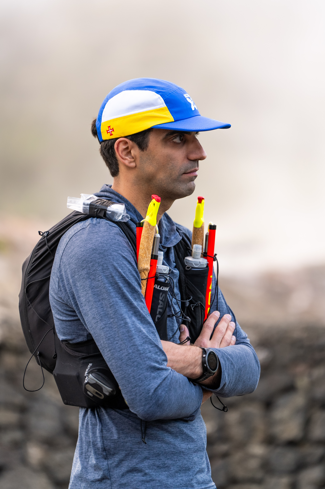

🚴♂️ Amatuer "Athlete" 🏃♂️
I was about 5 hours past finishing my first adult road race - a 10k - when I remember (admittedly after a little bit of celebration) thinking: "You know if I can run 10 miles I can run 100...". An older me would have let saner thoughts prevail but the next morning I had signed up for my first ultramarathon. It was fine though - I was on the waitlist. No worries. I trianed, but not really. I did some hikes. I mostly forget about it. That was until the minute I came off the High Sierra Trail that September. My second email: "Congrats, You're in!"
I ambled my way through 50 miles before my body completely quit, and yet still, farther than I had before (by about 4 times). It's ok though: I wasn't a runner. Honestly, I'm still not a runner. But occasionally, when I get bored, I want to see how far I can go fueled by hostess cupcakes and flat coca cola. Turns out most of the time these days - it's pretty far.
More recently I've been using ultramarathons as an excuse to explore new countries. Admittedly not always the best idea (Who wants to take 4 flights, hit four cities in under 60 hours, then run a 50k?!), it's opened my eyes to new parts of the world and led me to explore more and more of it (but there's a separate page for that).